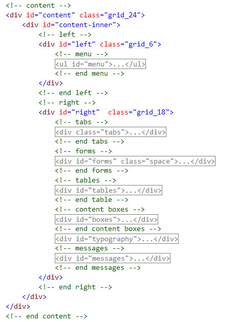
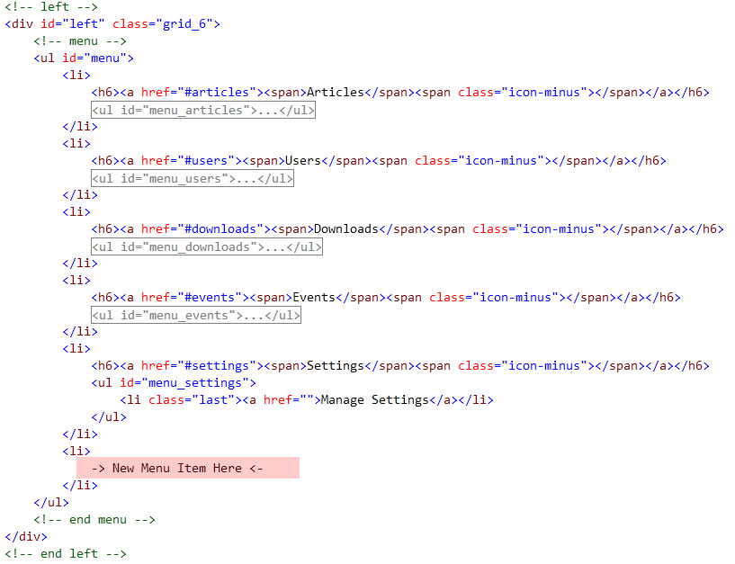
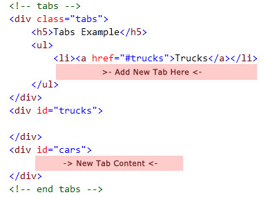

Created: March 2010
By: MIke Geise
Email: mike343@gmail.com
Thank you for purchasing Falcon Admin. If you have any questions that are beyond the scope of this help file, please feel free to email via my contact form here. Thanks so much!
This theme uses the 960 grid system and is a fixed layout with two columns. All of the information within the main content area is nested within a div with an id of "content". The left sidebar content is within a div with an id of "left" and the right sidebar content is within a div with an id of "right". Most of your editing and content will be within the div with the id of "right".

To add a menu item and sub links you must give the unordered list (ul) under the menu link a unique id with the following format "menu_[uniqueid]" and the link href must contain the name of the id with the following format "#uniqueid". The following example below will have the unique id named articles and as you can see the Articles link href contains "#articles" and the unordered list (ul) which contains the sub links has the id "menu_articles"
<h6><a href="#articles"><span>Articles</span><img src="images/plus.gif" alt="Expand" title="Expand" /></a></h6> <ul id="menu_articles"> <li><a href="">New Article</a></li> </ul>

To add a tab you will simply add another list item (li) to the unordered list (ul) but the href of the hyperlink must contain a unique id of the content you wish to display for this tab.
The following example below will have the unique id named cars and as you can see the Cars link href contains "#cars" and the div below the unordered list (ul) contains the id "cars"
To add tabs to content boxes you would repeat this same process.
<div class="tabs"> <h5>Tabs Example</h5> <ul> <li><a href="#trucks"<Trucks</a></li> <li><a href="#cars"<Cars</a></li> </ul> </div> <div id="trucks"> [content] </div> <div id="cars"> [content] </div>

To add new set of tabs you will simply create a unordered list (ul) with the links (refer to How to Add a Tab) nested within a div with the class "tabs". All of this must be nested within a div with a unique id.
You will also have to add some javascript within the head section of your html file.
The following example below demonstrates how this is done.
You can view detailed examples at the following page: http://jqueryui.com/demos/tabs/
<script type="text/javascript">
$(document).ready(function () {
$("#mycontent").tabs();
});
</script>
<div id="mycontent"> <div class="tabs"> <h5>Tabs Example</h5> <ul> <li><a href="#trucks"<Trucks</a></li> <li><a href="#cars"<Cars</a></li> </ul> </div> <div id="trucks"> [content] </div> <div id="cars"> [content] </div> </div>
I have written a simple javscript plugin for jquery that will transform your tables that follow a set convention into a simple bar chart with percentages.
The first thing you must do is include the javascript that will select your tables to be transformed in the head section of your page. The following javascript example below will transform all tables with the class that equals "chart"
<script type="text/javascript">
$(document).ready(function () {
$("table[class='chart']").bar();
});
</script>
Next your table must be laid out in the following format. The column you would like calculated and also include the bar image must contain the class "value". The following example below demonstrates this.
<table class="chart"> <thead> <tr> <th>Date</th> <th>Visits</th> </tr> </thead> <tbody> <tr> <td class="title">Monday, March 1, 2010</td> <td class="value">17154</td> <tr class="alt"> <td class="title">Tuesday, March 2, 2010</td> <td class="value">18062</td> </tr> </tbody> </table>
Falcon admin is using four CSS files. The first one is a generic reset file located in "resources/css/960/reset.css". Many web browsers interpret the default behavior of html elements differently. By using a general reset CSS file, we can work round this. Keep in mind, that these values might be overridden somewhere else in the file
The second file located in "resources/css/960/grid.css" is the 960 grid system which controls the dimensions of this theme. You can read more about the 960 grid system by visiting the following page: http://www.960.gs
The thrid file located in "resources/css/text.css" is the text styling. This file contains all the font styling, such as font type, font weight and font-sizes, If you would like to change any of the fonts or sizes you only need to make your changes in this file.
The fourth and final file located in "resources/css/default.css" is the main sytlesheet which contains all the colors and design elements
The main stylesheet contains all of the specific stylings for the page. The file is separated into sections using:
/* ----------------------------------------------------------- header -> dashboard ----------------------------------------------------------- */ some code /* ----------------------------------------------------------- footer ----------------------------------------------------------- */ some code etc, etc.
If you would like to edit a specific section of the site, simply find the appropriate label in the CSS file, and then scroll down until you find the appropriate style that needs to be edited.
Most of the time you will not need to edit any of the javascript files but, if you would like to take a peek I have documented the custom javscript I wrote thoroughly.
Falcon Admin imports three javascript files.
If you would like to learn more about jquery or jquery ui you can visit the following urls.
I have used the following jquery ui widgets to style and add extra functions to certain form elements
To use the date picker on any text box you must include the following javascript in the head section your page. The example below will add a date picker to the textbox with the id "published". You can also view more demos and options at following page: http://jqueryui.com/demos/datepicker/
<script type="text/javascript">
$("#published").datepicker({
showOn: 'button',
buttonImage: 'resources/images/calendar.gif',
buttonImageOnly: true
});
</script>
The styled select menus is based on the jquery ui selectmenu, This plugin is still in the planning stages but so far has proven to be stable. You can read more about the selectmenu script here.
To style any select menu on your page you must simply include the following javascript in the head section of your page.
<script type="text/javascript">
$("select").selectmenu({
style: 'dropdown',
width: 200,
menuWidth: 200
});
</script>
The custom submit buttons are made possible by the jquery ui button widget. You can read more about the button widget at the following page: http://jqueryui.com/demos/button/
For any submit,reset or regular button you would like to style you must include the following javascript in the head section of your page. The first example below will style any buttons that are a input with the type submit. The second example will style both inputs that have the type submit or reset.
<script type="text/javascript">
$("input:submit").button();
</script>
<script type="text/javascript">
$("input:submit, input:reset").button();
</script>
There is two PSD files included with this theme named faclonadmin.psd and falconadmin_icons.psd located in the psds folder. Both PSD files are well organized in named groups and all layers are named appropriately.
The 960 grid system is licensed under MIT. You can read more about the 960 grid by visiting the following page: http://www.960.gs
The FamFamFam Icon Set is a free icon set. All of these icons and more can be downloaded from the folowing location: http://www.famfamfam.com/
Jquery & Jquery UI are licensed under MIT. You can learn more about jquery by visiting the following page: http://jquery.org.
Once again, thank you for purchasing Falcon Admin. As I said at the beginning, I'd be glad to help you if you have any questions relating to this theme. No guarantees, but I'll do my best to assist. If you have a more general question relating to the themes on ThemeForest, you might consider visiting the forums and asking your question in the "Item Discussion" section.
Sincerely, Mike Geise